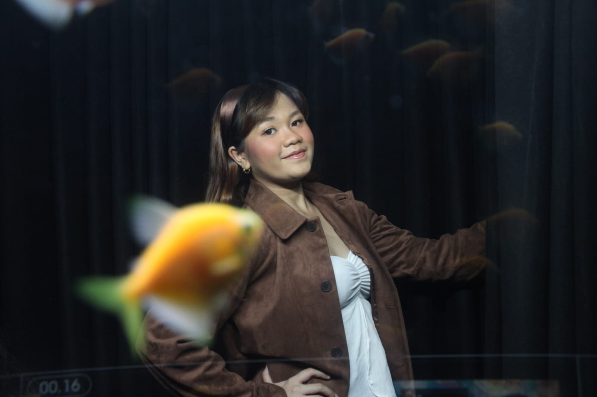

HALO, SAYA
Saya merupakan mahasiswi Teknik Informatika Universitas Tarumanagara yang tertarik pada pengembangan perangkat lunak dan analisis data. Saya senang belajar hal baru dan menyelesaikan masalah dalam pemrograman.
Lihat Project
SD Santa Maria Fatima
2012 - 2018SMP Strada Santa Anna
2018 - 2021SMA Budhaya 2 Santo Agustinus
2021 - 2024Universitas Tarumanagara
S1 Teknik InformatikaMembuat fitur loyalty stamp menggunakan Laravel dan database MySQL.
Mengerjakan project pemrograman menggunakan konsep struktur data.
Mengerjakan perhitungan dan pengolahan data menggunakan MATLAB.